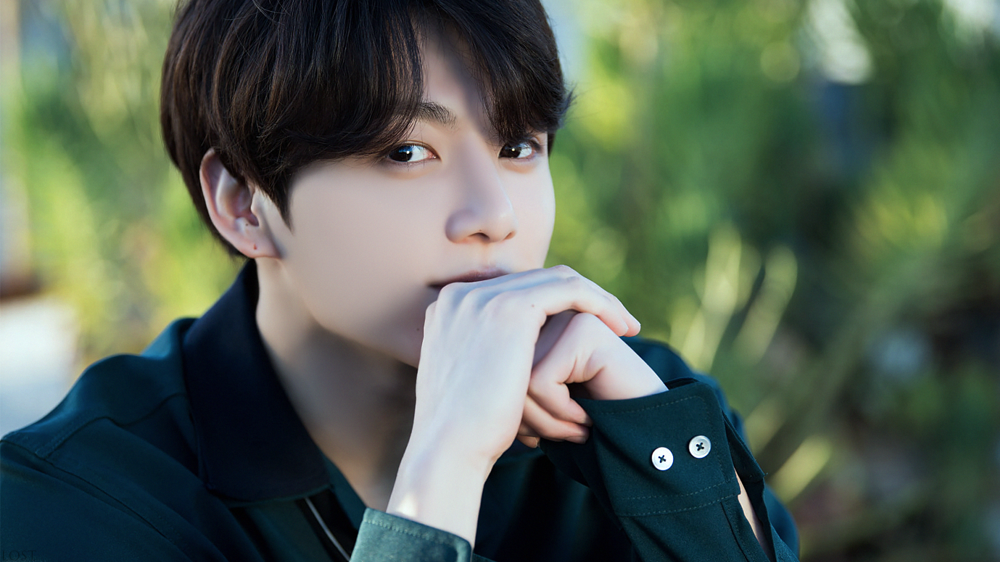

Чон Чонгук
Чон Чонгук южнокорейский певец, танцор, автор песен и продюсер компании BigHit Music. Он является младшим участником мужской группы BTS.
Согласно данным Корейской ассоциации звукозаписывающих компаний (KOMCA), Чонгук является автором шести композиций в дискографии группы.
Карьера
В BTS
13 июня 2013 года Чонгук дебютировал в составе BTS в возрасте 15 лет с первым сингловым альбомом группы "2 Cool 4 Skool". Выпустил две сольные композиции в группе — "Euphoria" и "Begin". "Begin" была выпущена в октябре 2016 года и вошла во второй студийный альбом группы Wings. "Euphoria" для Love Yourself: Answer была спродюсирована канадским диджеем DJ Swivel. Изначально композиция стала главной темой мини-фильма "Euphoria: Theme of Love Yourself: Wonder". Песня дебютировала в "Bubbling Under Hot 100 Singles" расположившись на 105 месте, и на протяжении 13 недель находилась в цифровом чарте Gaon.
Сольная карьера
В сентябре 2015 года Чонгук принял участие в кампании "Единая мечта, единая Корея" и стал одним из исполнителей одноимённой песни, записанной несколькими корейскими артистами в память о Корейской войне. Впервые песня была представлена на концерте 15 октября того же года.
В 2016 году он участвовал в шоу Цветочная команда и Звёздный броманс. Он также появлялся на передаче Лучший певец в маске в 71 и 72 эпизодах. На KBS Song Festival Чонгук исполнил кавер "I’m Butterfly" вместе с другими айдолами 97 года рождения. В 2018 году, во время подготовки камбэк-шоу BTS телеканал Mnet предложил ему должность одного из продюсеров проекта. 6 ноября 2018 года он выступил вместе с Чарли Путом на MBC Plus X Genie Music Awards, где исполнил хит-сингл "We Don't Talk Anymore". 28 июля 2020 года Чонгук записал кавер на песню Джастина Бибера "10000 Hours".
Дискография
Коллаборации
«Они — отличные парни, и у нас очень похожее видение», — подметил артист в одном из интервью.
Саундтреки
Интересные факты
- Любимая еда: изделия, что содержат муку, в особенности хлеб и пиццу. Так же любит свиной суп, рис, сашими и морской угорь.
- Любимые цвета: красный, чёрный, белый.
- Любимые вещи: обувь, косметика/грим
- Любимое число: 1.
- Любимая группа Чонгука: Dynamic Duo.
- Любит рисовать.
- Любит солнечную погоду с прохладным ветерком.
- Чонгук дольше всех принимает ванну.